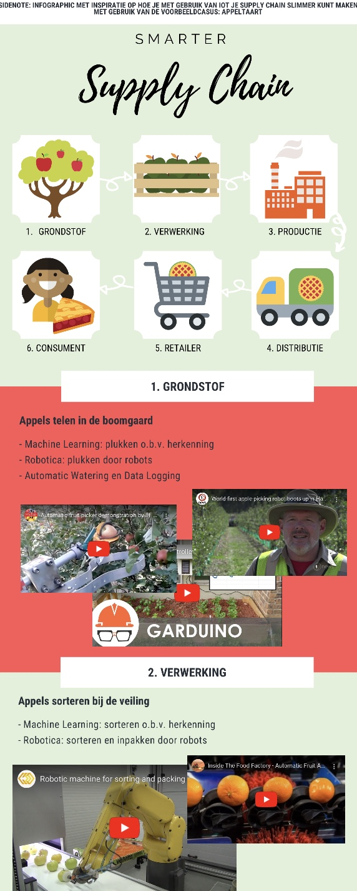
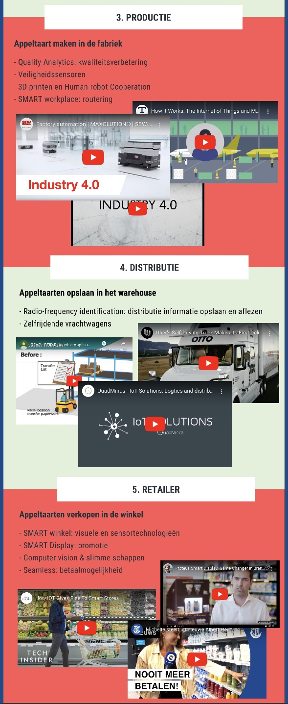
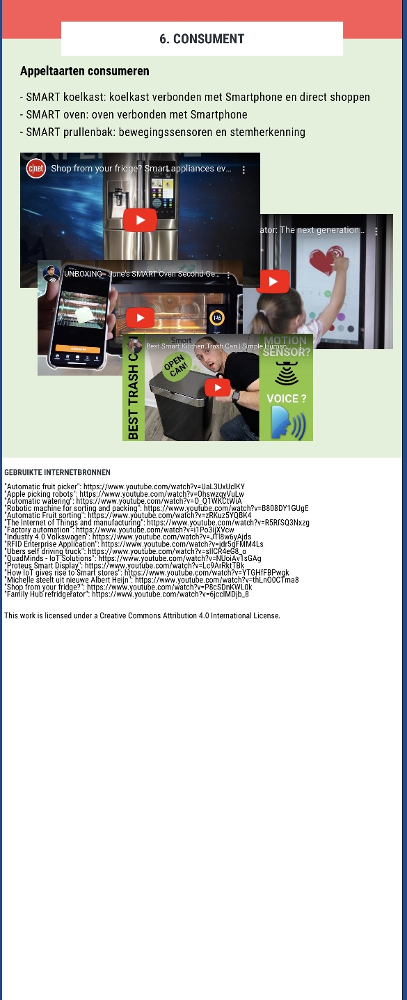

Week 5: Organisaties
introductie
In de een-na-laatste week voor de herfstvakantie stond het verband tussen Industry 4.0 en de organisatie centraal bij Smart Start. Verder was er een workshop voor Smart Connection en Technology. Ook was de lijst met projectpartners rond en kregen Jesse, Miranda en ik te horen dat we bij Kropman aan de slag mochten.
Smart Start
Als voorbereiding op Smart Start moesten we een filmpje kijken over Uber en Amazon. Deze bedrijven hebben een Smart Supply Chain ontwikkeld waarmee ze marktleider zijn geworden. Verder diende je eigen onderzoek te doen naar smart toepassingen in de Supply Chain. Dit heb ik gedaan in de voedingsindustrie. de Voorbereiding van de les is hieronder te zien:
Terugkoppeling filmpje
Technologie heeft veel impact op de supply chain van verschillende bedrijven. Er ontstaan bedrijven zoals Amazon of Uber die de supply chain super in orde hebben door de technologie die de bedrijven toe passen. Om Uber als voorbeeld te gebruiken, dit bedrijf gebruikt een app voor zowel klant als leverancier. Door deze Smart Technologie worden mensen die opzoek zijn naar een vervoersmiddel direct geholpen aan een ritje. Je kunt betalen via de app en kan een review geven over de chauffeur (Marks, 2019). Uber heeft hierdoor een Smart Supply Chain ontwikkelt in het bedrijf. Het product (de app) die het bedrijf verkoopt levert zowel waarde aan de klant als aan de leveranciers. Deze ontwikkeling speelt zich ook in de voedingsindustrie en deze wordt hieronder geformuleerd (Werning, 2016).
Eigen Onderzoek
Smart Technologies zijn opkomende innovaties die de voedingsindustrie doen veranderen. Vroeger toen je een pizza wilde ging je langs bij de dichtbij zijnde pizzabakker en bestelde je een pizza voor mee naar huis. Je kon hooguit van tevoren bellen zodat het eten klaar was wanneer jij het kwam ophalen. Deze tijden zijn drastisch veranderd. Je kan door middel van de Thuisbezorgd.nl app wel tien verschillende pizzabakkers in de buurt zien. Hieruit kun je een keuze maken en daarna kun je betalen en wordt het eten bij je thuis afgeleverd. Dit is de Smart Technologie kant van de klant, maar bij het pizzarestaurant maakt Thuisbezorgd.nl het werk ook eenvoudiger. Het bedrijf houdt de betalingen bij voor de producent maar rekenen ook de wachttijden uit voor de klant. Verder laat de app ook de favoriete pizza’s zien waardoor de waarde voor de klant nog meer stijgt. De Supply Chain rondom foodservices is heel goed geregeld door Thuisbezorgd.nl en biedt zowel waarde voor de klant als voor de leverancier (Rabobank, 2019).
Bibliografie
Weekopdracht
De les was al op tijd voorbij dus gingen we in groepen alvast aan de weekopdracht werken. We hebben met de gehele klas verschillende opdrachten geformuleerd en deze uiteindelijk onderverdeeld. Miranda, Jesse, Ik en Tijmen werkten samen aan de opdracht. Bij onze opdracht was het de bedoeling dat je Smart toepassingen voor een gehele bedrijfsketen formuleerden. Mijn aandeel in deze opdracht waren de IoT-innovaties in de productie en distributie. De gehele opdracht is hieronder weergegeven.
  Smart Connection
Tijdens de workshop van Smart Connection gingen we een weerpagina van je eigen gemeente/stad coderen. We werkte via een tutorial en moesten uiteindelijk de code opzoeken van de desbetreffende gemeente. Dit was onze kennismaken met API en JSON. Het is interessant hoe je real life data kunt gebruiken op je site. Ik stond er wel van te kijken hoeveel data er wel niet zit achter een klein weerberichtje. Een afbeelding van de pagina is hieronder te zien. Verder zal het weerbericht ook in mijn portfolio te vinden zijn.

Smart Technology
Bij de workshop van Smart Technology gingen we een PCB ontwerpen. Dit deden we in het programma EAGLE. We maakten het printboard digitaal via een software. Dit deden we deze week 5 alleen nog maar in een schematische weergave, deze is hieronder te zien.

Ik vond dit heel leuk om te doen en om dat uit te puzzelen. De leraar vond ook dat ik het mooi en duidelijk had uitgewerkt via de benamingen bij de lijntjes.